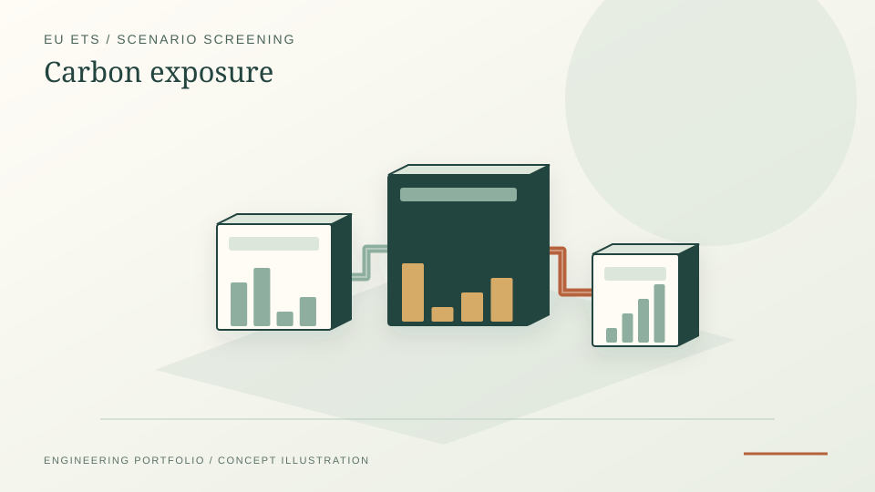

How do fuel activity and allowance-price assumptions affect exposure? Tested Scope 1 calculations with contextual Scope 2 reporting and transparent demonstration factors. Not compliance advice.
EU ETS · Carbon cost · Streamlit
EU ETS Exposure Calculator
A focused EU ETS decision-support toolkit for emissions accounting, EUA price scenarios, carbon-intensity trends and PDF reporting.
StreamlitExcelPythonEU ETS

PROJECT REFERENCE / EU-ETS-EXPOSURE-CALCULATORWhat I built
- Created a Streamlit app and Excel workflow for EU ETS-focused exposure analysis.
- Implemented calculations for direct emissions, allowance-cost scenarios and carbon intensity trends.
- Added EUA price sensitivity views and cost-delta interpretation for management-facing decisions.
- Packaged workbook parsing, fallback calculations, CLI execution and automated tests.
Method
Carbon-cost computation pipeline
- Activity data: ingest annual fuel use (TJ or m³), Scope 2 electricity (MWh) and any imported steam/heat with stated emission factors. Workbook follows the EU ETS Annex IV reporting template.
- Scope 1 emissions: compute t_CO₂ per fuel via E = AD · NCV · EF, where NCV is the net calorific value and EF is the IPCC AR5 default unless an installation-specific factor is provided.
- Allowance exposure: net allowances = total Scope 1 emissions − free allocation. Free allocation defaults to zero outside the carbon-leakage list; user overrides per installation.
- Price scenarios: three EUA-price trajectories (low/central/high) over a chosen 5- or 10-year horizon. Annual cost = net allowances × EUA price.
- Sensitivity: tornado plot showing relative impact of NCV, EF and EUA-price uncertainty on total exposure.
- Report: Streamlit dashboard for review, plus a PDF cover sheet with summary table and the three trajectory plots.
Outputs
What the calculator produces
- scenario_summary.csv — installation × year × scenario, with t_CO₂, allowances needed, EUA price, total cost
- sensitivity_tornado.png — relative-impact bars for the four uncertainty drivers
- emissions_trajectory.png — three EUA-price paths overlaid on the same chart
- carbon_cost_pdf.pdf — one-pager: summary, charts, methodology notes, citation list
- CLI runner — same pipeline callable headlessly via
python -m euets_calculator --config inputs.yaml
Limitations
What the calculator does not cover
- Does not model CBAM interactions — only the EU ETS Scope 1 directly-regulated emissions are quantified.
- EUA price scenarios are user-supplied; the tool does not include a forward-curve forecast model.
- Free-allocation logic is simplified — full benchmark allocation (BM × HAL × CL × CSCF) requires verified historical-activity data.
- Steam and district-heat imports use stated emission factors; on-site cogeneration allocation (heat vs. power) needs an upstream calculation.
Relevance
Why this matters
This project demonstrates how regulatory carbon exposure can be converted into a usable engineering-finance tool: transparent assumptions, scenario comparison, sensitivity analysis and repeatable reporting. The same input → physics → cost → scenario pattern appears across the industrial-decarbonisation portfolio (EnPI toolkit, district-heating dispatch, Alleima methodology).